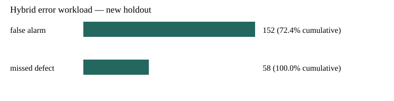

NO-GO • Fictional requirements • October 2026

Full metrics · All errors · Batch variation
# Quality Signal Lab — capacity review, revision 2 **NO-GO** under fictional QSL-001 requirements. New AI-assisted portfolio exercise, October 2026; no real customer or factory claims. ## Disclosure and freeze This revision followed inspection of the first 600-item test (batches 10–12). The first report and release ZIP remain intact. Model coefficients, scaling and rule limits were frozen. Existing validation batches 8–9 were reused for exploratory policy comparison; this is a disclosed refinement, not the original pre-registered experiment. New batches 13–15 (600 items) were untouched until the validation-only capacity threshold was selected. They continue the same synthetic drift and logistic label mechanism, so they are not an independent factory or a new failure type. No threshold was adjusted after new holdout review. ## Customer interpretation and operational gate Fictional capacity: at most 80 of 200 items per batch (40%), with latent-defect recall ≥80% in every batch. Mandatory measurement flags cannot be cleared by ML. Hybrid = fixed rule OR model probability ≥ threshold. Select lowest validation 5 FN + FP cost among candidates meeting capacity in every validation batch. Ties prefer higher threshold. Selected hybrid threshold: 0.40. Validation requirement gate: False. If the mandatory rule alone exceeds capacity, a supplementary model cannot fix that conflict; escalate the specification and process question. ## New untouched holdout — frozen policies | Policy | TN | FP | FN | TP | Recall | Flags | Cost 5 FN + FP | Every-batch requirements | |---|---:|---:|---:|---:|---:|---:|---:|---| | baseline | 235 | 101 | 111 | 153 | 58.0% | 42.3% | 656 | False | | original_cost_ml | 39 | 297 | 7 | 257 | 97.3% | 92.3% | 332 | False | | capacity_hybrid | 184 | 152 | 58 | 206 | 78.0% | 59.7% | 442 | False | The cost-only ML is retained as context; it does not preserve mandatory flags. It is not eligible to replace the specification-derived baseline. The original baseline is unchanged and never optimized against label outcomes. Even a lower hypothetical error cost does not authorize operation when review capacity or recall requirements fail. A NO-GO result is a useful engineering finding: queue load, defect misses and customer goals cannot be hidden by accuracy. ## Validation-only policy comparison The entire grid below uses batches 8–9 only. Aggregate percentages aid comparison; the gate uses each batch. Full per-batch values are in metrics.json. | Hybrid threshold | Validation recall | Validation flags | Cost | Every-batch capacity | Every-batch full requirements | |---|---:|---:|---:|---|---| | 0.05 | 100.0% | 100.0% | 280 | False | False | | 0.10 | 99.2% | 99.0% | 282 | False | False | | 0.15 | 95.0% | 92.2% | 285 | False | False | | 0.20 | 89.2% | 78.0% | 270 | False | False | | 0.25 | 79.2% | 63.7% | 285 | False | False | | 0.30 | 68.3% | 51.5% | 314 | False | False | | 0.35 | 63.3% | 41.5% | 310 | False | False | | 0.40 | 52.5% | 32.5% | 352 | True | False | | 0.45 | 46.7% | 26.2% | 369 | True | False | | 0.50 | 40.8% | 22.8% | 397 | True | False | | 0.55 | 40.8% | 22.0% | 394 | True | False | | 0.60 | 38.3% | 21.0% | 408 | True | False | | 0.65 | 38.3% | 20.8% | 407 | True | False | | 0.70 | 38.3% | 20.8% | 407 | True | False | | 0.75 | 38.3% | 20.8% | 407 | True | False | | 0.80 | 38.3% | 20.8% | 407 | True | False | | 0.85 | 38.3% | 20.8% | 407 | True | False | | 0.90 | 38.3% | 20.8% | 407 | True | False | | 0.95 | 38.3% | 20.8% | 407 | True | False | ## Failure review and error Pareto failure_review.csv contains every capacity-hybrid error. error_pareto.csv and error_pareto.svg rank mutually exclusive false alarms and missed defects; one item contributes to at most one error category for this one policy. This is an error-workload Pareto, not causal defect categories, independent model errors pooled together, or evidence for an 80/20 law. Sorting errors does not establish a root cause. Confirm measurement methods and label adjudication first. ## Basic variation review | Batch | Diameter mean mm | Sample SD mm | Diameter excursions / 200 | Any rule flags / 200 | |---|---:|---:|---:|---:| | 1 | 10.0026 | 0.1246 | 20 | 25 | | 2 | 10.0141 | 0.1116 | 15 | 21 | | 3 | 10.0067 | 0.1170 | 15 | 23 | | 4 | 10.0221 | 0.1180 | 18 | 24 | | 5 | 10.0460 | 0.1126 | 22 | 32 | | 6 | 10.0705 | 0.1195 | 32 | 39 | | 7 | 10.0639 | 0.1019 | 15 | 29 | | 8 | 10.0788 | 0.1157 | 28 | 33 | | 9 | 10.0938 | 0.1171 | 39 | 50 | | 10 | 10.1140 | 0.1124 | 48 | 57 | | 11 | 10.1232 | 0.1200 | 57 | 66 | | 12 | 10.1346 | 0.1172 | 54 | 64 | | 13 | 10.1486 | 0.1155 | 71 | 88 | | 14 | 10.1492 | 0.1073 | 64 | 80 | | 15 | 10.1696 | 0.1241 | 70 | 86 | Mean and sample SD (denominator n−1) describe generated diameter measurements. The intentionally changing mean violates a stable-process interpretation. Limits are invented specification limits, not statistical control limits. No Cp/Cpk, gauge R&R, Six Sigma level or certified improvement is claimed. ## Limitations and next priority Labels include Bernoulli uncertainty, so measurements cannot determine every outcome. The logistic label mechanism favors the selected model family. Vibration and surface are generic numeric surrogates; no optical or electronics hardware, image detection, real machine integration or physical process knowledge is shown. A human must resolve specification/label meaning, acceptable escape severity, capacity and measurement-system uncertainty before collecting independent real lots. See CUSTOMER-SPEC.md, PROCESS-MAP.md and ISSUE-LOG.md for interpretation and priority.